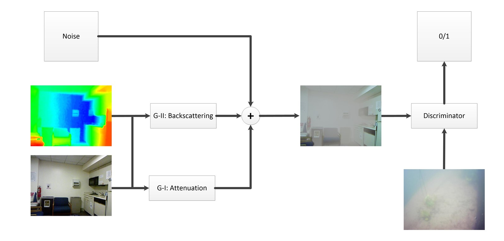
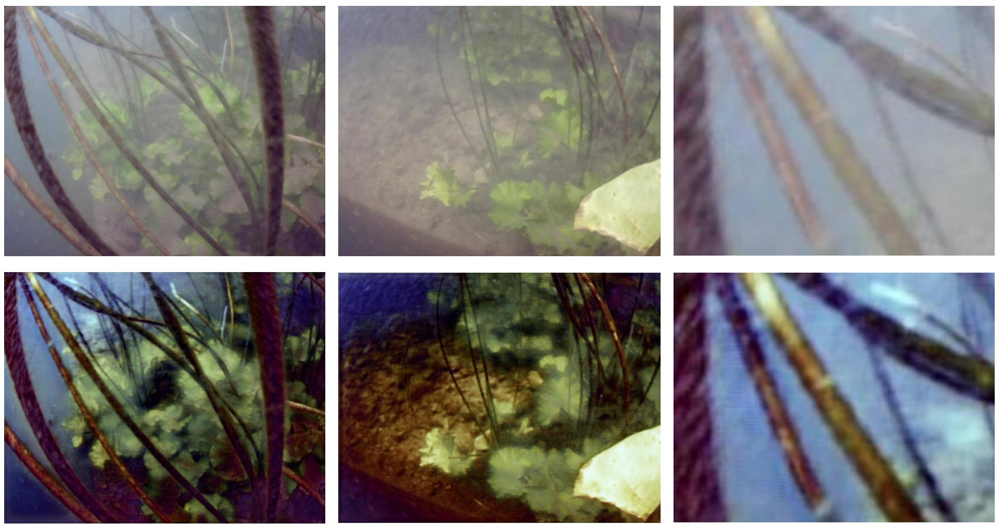

About me
Bingbing Zhang is currently a third-year PhD candidate studying Marine Robotics in Zhejiang University, supervised by Prof. Wen Xu. During the PhD study, he works closely with Prof. Shuo Liu and Prof. Daxiong Ji to develop a novel autonomous underwater vehicle (AUV) with both crawling and swimming mode, which is able to survive in deep sea for more than two weeks. Bingbing’s research interests include AUV navigation and simultaneous localization and mapping (SLAM). His current work is developing learning-based techniques of place recognition and localization for multi-modal underwater navigation with vision, acoustic and magnetic sensors.
Education
- 2020-Present, Ph.D., Zhejiang University, China
- 2016-2020, B.E., Zhejiang University, China
Experience
April 2021 - August 2021, teaching assistant, Shenlan Institute
December 2019 - June 2020, graduation project
- Studying on image enhancement based on generative adversarial network (GAN)<
- Studying on image enhancement based on generative adversarial network (GAN)
September 2019 - December 2019, research intern, Department of Electrical and Computer Engineering in University of Florida
Supervised by Prof. Shuo Wang
Proposing a mathematical model to minimize the energy consumption of electromagnetic devices.